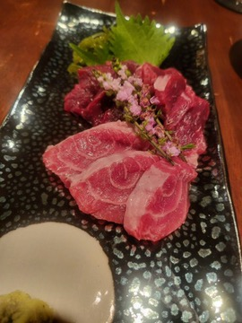
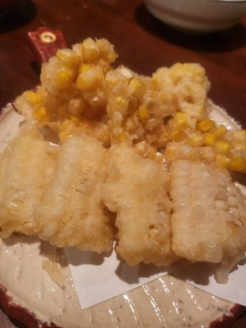
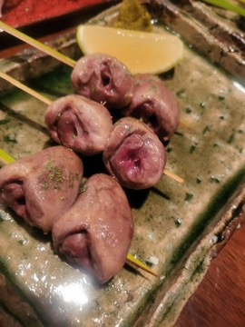
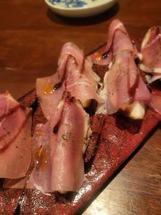
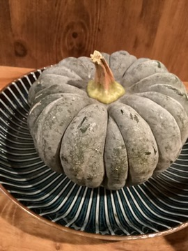
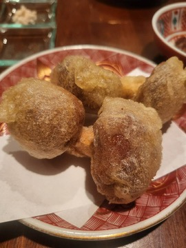

MENU
酒匠が選ぶ一献と、和食をベースに自由な発想を加えた料理
店主自ら目利きする旬の魚や馬刺しなどの食材と、料理に寄り添う日本酒のペアリングをお楽しみください。コース内容・お品書きは仕入れと季節により変わります。






料理のこだわり


店主自ら目利きする旬の魚や馬刺しなどの食材と、料理に寄り添う日本酒のペアリングをお楽しみください。コース内容・お品書きは仕入れと季節により変わります。





